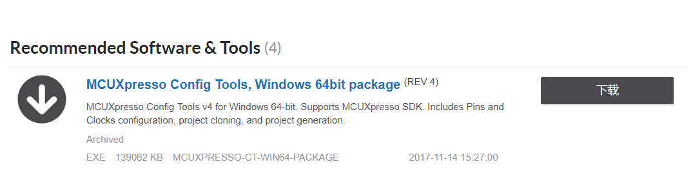
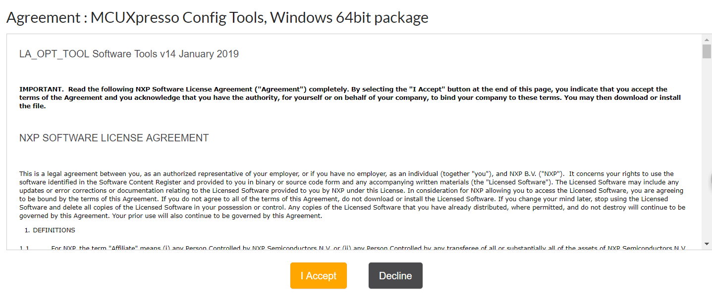
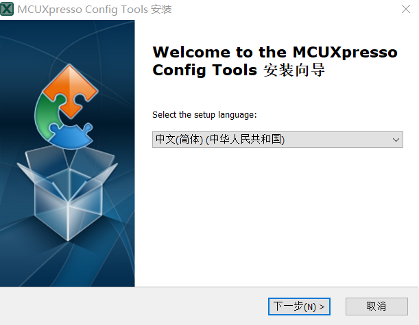
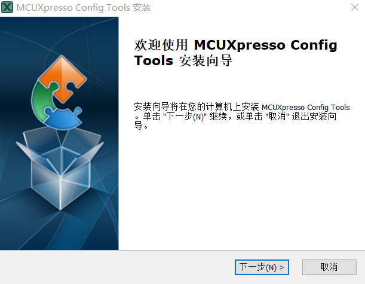
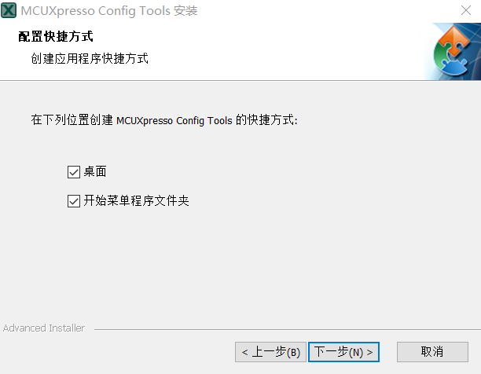
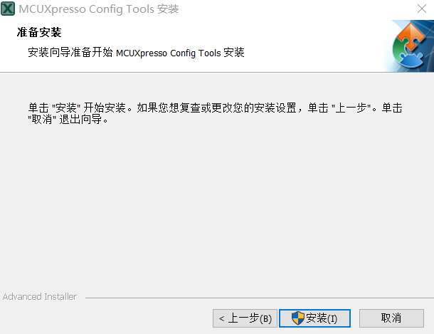
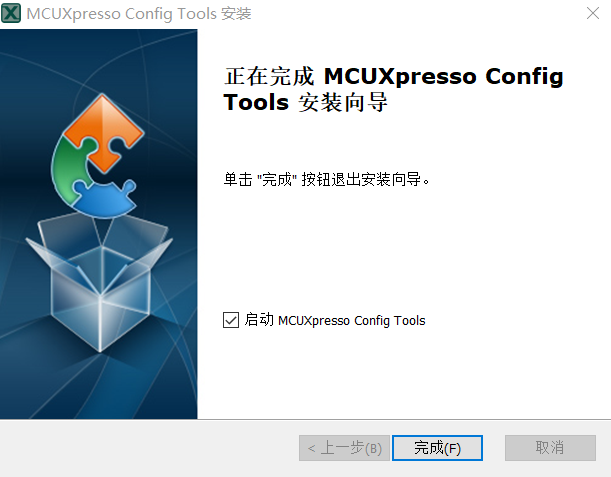

1.MCU 集成开发环境
2.基于 NXP 的 Keil 开发环境搭建
2.1.下载并安装 Keil
2.2.下载 Keil SDK
2.3.下载 Package
2.4.Keil 工程搭建
2.4.1.添加目录结构树
2.4.2.修改 Options
2.4.3.使用 MCUXpresso Config Tools 生成时钟、引脚文件
2.4.4.HelloWorld 示例
3.基于 NXP 的 IAR 开发环境搭建
4.基于 NXP 的 MCUXpresso 开发环境搭建
4.1.下载并安装 MCUXpresso IDE
4.2.下载并安装 MCUXpresso Config Tools
4.3.下载 MCUXpresso SDK
4.4.使用 MCUXpresso Config Tools 生成代码
4.5.使用 MCUXpresso IDE 调试代码
4.5.1.开启视图窗口
4.5.2.加载 Xpresso SDK
4.5.3.HelloWorld 示例
Published with GitBook
4.2.下载并安装 MCUXpresso Config Tools
4.2.下载并安装 MCUXpresso Config Tools
MCUXpressoConfigTools 下载页面
Step 1.进入下载页面，点击下载

Step 2.点击 I Accept

Step 3.选择语言，点击下一步

Step 4.点击下一步

Step 5.选择安装路径，点击下一步
Step 6.创建快捷方式，点击下一步

Step 7.点击安装

Step 8.点击完成

results matching "
"
No results matching "
"